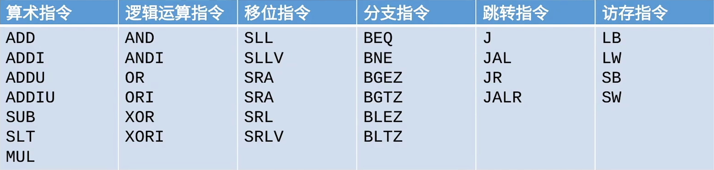
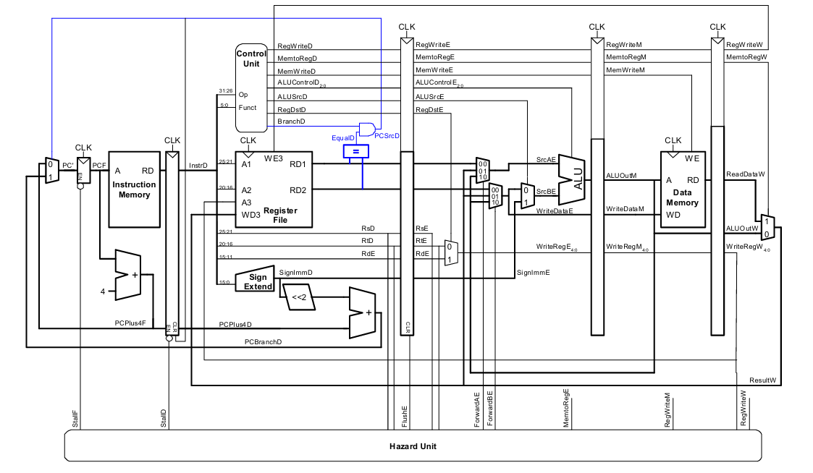
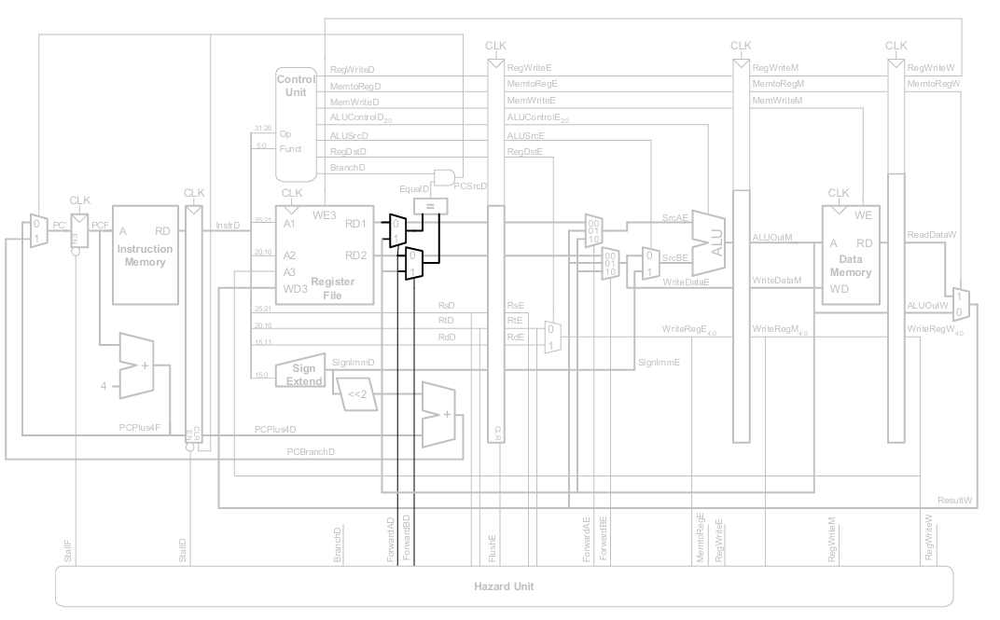
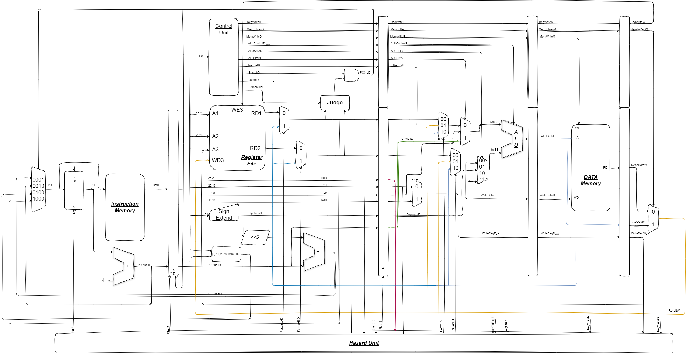

龙芯杯日记
这篇文章用于记录我备战龙芯被的过程，以及比赛的一些心得体会。
2025-02-17
通过仔细对照信号波形图，我发现了三个问题：
- 有些信号名称写错了，导致了后续的错误；
- alu 与 controller 模块的内容有错误，导致输出的信号不对；
- 取指令之前的地址选择信号有问题，导致了取指令错误。
其中第三个问题尤其关键，这可能是波形图后续出现问题的根源。我将在明天继续排查这个问题。
补：想展示我的波形图，发现不支持，这个问题也等明天解决吧。
2025-02-18
上午
继续排查信号问题，发现原来是写代码时信号名称写错了，导致平白出现一个高阻抗信号，导致了后续的错误，现在已经解决。但是当运行到 beq 指令时，发现了一个新的问题，我将在下午继续排查。
下午
发现 alu 输入 a 信号选择有问题，导致 aluout 出错。
发现将 regfile 写入从上升沿触发改为下降沿触发后，波形图正常了。但是仍需排查结果是否正确且上升沿为什么不行。
beq 指令出现错误，还需要继续排查。
2025-02-19
上午
第一条 beq 指令，没有发生跳转，但是他却清空了后一条指令的寄存器，导致后一条指令无法正常执行。最后一条无条件跳转 J 指令，却没有跳转，导致多执行了数条指令。
当创建 iprom 时，若我不勾选 generate address interface with 32 bits 会导致输入地址与取出的指令不一致，这也是一个问题。
问题一是由于 ip 核读取时，至少会晚一个周期。所以本该被延迟的信号的下一个信号会被延迟，导致本该被延迟信号的消失。
下午
目前成功将所有问题解决。当令 ip 核 clk 下降沿触发时，可以解决晚一个周期的问题。regfile 写入下降沿触发时为了避开上升沿写入，这样的话数据冒险可以少考虑一个周期。但是 iprom 的问题还是不能理解。
接下来的几天，我的目标就是将龙芯杯要求的所有指令都实现一遍，然后进行测试。

算术指令，逻辑运算指令，变量位移指令（sllv, srlv, srav）,访存指令都可以复用 alu，只需要修改 alu 的控制信号即可。


成功解决了图片问题，原因是 hexo 会生成新的 public 文件夹，将我的 md 文件转为 html 文件，所以我的图片路径需要参照 public 文件夹中的相对路径，而不是 source 文件夹中的相对路径。
2025-02-21
- 更改 controller 与 alu 模块，使其可以支持所有指令。其中 controller 模块的控制信号生成部分没有完成，且更改部分还没有经过检测。
- 为了便于以后更改 cpu 框架，画出了 cpu 的框架图。
- next_pc 修改为四选一多路选择器，可以选择 pc+4, pc+4+imm, pc+4+imm<<2,rs。
实现 jal 指令需要 PC+8 存入 31 号寄存器，所以 alu 第一源操作数需要添加一个选择信号，选择 PC+8，第二源操作添加一个选择信号，选择 4. - mult 指令的实现，需要后面再实现。
- j 指令需要立刻跳转，但是我的好像是下一个周期跳转，可能存在仿真没检查出来的问题。
- sll/srl/sra 指令的实现，选择添加一个位移器的数据通路。
2025-02-22
上午
- 将下降沿读 ram 更改为以 next_pc 为指令 ram 的读地址，这样指令 ram 的输出是在指令位于 IF 阶段时完成的。此时在讲 j 指令判断提前，这样可以解决 j 指令立刻跳转的问题。数据 ram 同理。
下午
-
已经解决的问题：
- beq 类指令的实现。增加一个 BranchJug 模块，用于判断具体是哪一类的 beq 指令。使用一个二选一多路选择器，PC+4 与 PC+4+i 选择器，选择器的选择信号由 BranchJug 模块输出。
- jal 类指令的实现。使用一个三选一多路选择器，在 branch 二选一多路选择器的基础上，选择 BranchPC, PC+4+imm<<2, rs，号由 j 类指令的控制信号输出。在 AluAE 信号之前添加一个三选一多路选择器，选择 PC+4, sa, 前递后的 rd1，选择信号是 alusr 在 AluBE 信号之前添加一个三选一多路选择器，选择 4, signlmm, 前递后的 rd2，选择信号是 alusrcb。
- 位移指令的实现。最后选择将其放在 alu 模块中实现。
- 逻辑运算与算术运算指令的实现。这部分好实现，只需修改 controller 模块的控制信号与添加 alu 中的计算部分即可。
-
需要解决的问题：
- lb，sb 指令的实现，需要添加一个扩位器，将 8 位扩展为 32 位。
- mult 指令的实现，需要添加一个乘法器，将两个 32 位数相乘，得到 64 位数，将 64 位数的高 32 位存入 hi 寄存器，低 32 位存入 lo 寄存器。
- hazard 模块没有修改，需要添加对于 j 类指令的控制冒险处理。
- 修改 cpu 流程图，有很多地方属于最开始的不成熟想法，与实际代码不符。
- 学会使用 trace，将其与波形图结合，可以更好的调试代码。

晚上
为了使用 trace，我需要下载 linux 系统，这里我借鉴了【Linux】wsl2 安装 ubuntu 并移动安装位置，成功下载了 wsl2。
2025-02-23
上午
- 成功找到了 CPU-CDE 环境，并配置好了 mipsel-linux-gcc 编译器，可以使用 trace 进行调试。准备将指令补全，然后进行测试。
- 发现我并没有注意到指令集中有零扩展与符号扩展，我需要添加一个选择扩展方式的信号。controller 模块中添加一个扩展方式选择信号，inst_andi || inst_ori || inst_xori 时选择 0 扩展，其余时选择符号扩展。
- 发现 cpu 没有在 mem 阶段将访存数据前递，而是选择在 wb 阶段前递，这样会加一个周期的延迟。不知道这样的设计是否合理，需要进一步考虑。
- 添加 lb 指令，在 mem 阶段，访存后加入一个二选一多路选择器，一个是 readdata，一个是 readdata 的低 8 位扩展为 32 位，选择信号是 lb。但是需要考虑 ram 是否支持字节对齐。 5.添加 sb 指令，在 mem 阶段，访存前加入一个二选一多路选择器，一个是 4{WriteDataM[7:0]}, 一个是 WriteDataM，选择信号是 sb。再添加一个字节写使能信号，用于控制写入的字节。
2025-02-24
上午
- 解决了 jal 类指令的控制冒险问题，直接在 stall 信号中添加一个 jal 类指令的判断，如果是 j 类指令，直接 stall，这样可以解决 jal 类指令的控制冒险问题。
- 我需要添加一个 idea pool，用于存放我想要写的内容，以帮助我更好的产出高质量文章。可以直接在 draft 文件夹中新建一个’idea.md’文件，用于存放我的想法。
2025-02-27
下午
最近很久没更新了，主要原因是使用 trace 调试的时候，gettrace 跑出来的波形图信号是 XXX，不知道是什么原因，导致我无法调试。所以现在我决定自己写一个测试程序。
2025-02-28
下午
还是使用之前的验证程序，成功运行。
我大意了，没有闪。gettrace 需要点击一下 run all 按钮才能运行。这个小问题白白浪费了我几天时间，难受住。
目前没有搞懂 pre-IF 阶段的作用，我需要进一步了解这个阶段。
2025-03-01
上午
使用 trace 调试，需要重写顶层模块的输入输出，将其与 trace 的输入输出对应起来。借此我准备重构我的 cpu 代码，将其更加规范化。
graph TB
subgraph mycpu[我的CPU架构]
subgraph hazard[冒险检测单元]
H1[数据冒险] --> H2[控制冒险]
end
subgraph datapath[数据通路]
IF[IF取指令] --> ID[ID指令译码]
ID --> EX[EX执行]
EX --> MEM[MEM访存]
MEM --> WB[WB写回]
end
subgraph controller[控制器]
C1[主控制器] --> C2[ALU控制器]
C3[分支控制] --> C4[跳转控制]
end
hazard ---> datapath
controller ---> datapath
end下午
- 重构了 cpu 代码，我还需要完善我的 cpu 架构图，将其与代码对应起来。
- 我的代码中，各个模块接口与变量的命名不够规范，这是因为我自己的想法与 AI 的自动补全不同，我需要进一步规范化我的代码。
- 想要跑通 trace，我还有几条指令没有实现（lui subu sltu slti sltiu div divu multu mfhi mflo mthi mtlo），虽然这些指令不是龙芯杯要求的，但是我还是可以实现一下，以便更好的调试。
- 在 lab6 测试完后，我需要将我的代码上传到 github 上，一个 test 分支用于测试，一个 for nscscc 分支用于提交。 再添加一个 for os 分支，用于实现操作系统。